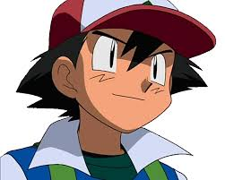

ESTE ES UN VERDADERO MAESTRO POKEMON

Ash es un entrenador Pokémon que junto con su Pokémon inicial Pikachu, obtenido de manos del profesor Oak en Pueblo Paleta, va recorriendo las regiones del mundo Pokémon con el objetivo de reunir las medallas de gimnasio necesarias para participar en una Liga Pokémon y ganarla, y así estar un paso más cerca de convertirse en un maestro Pokémon